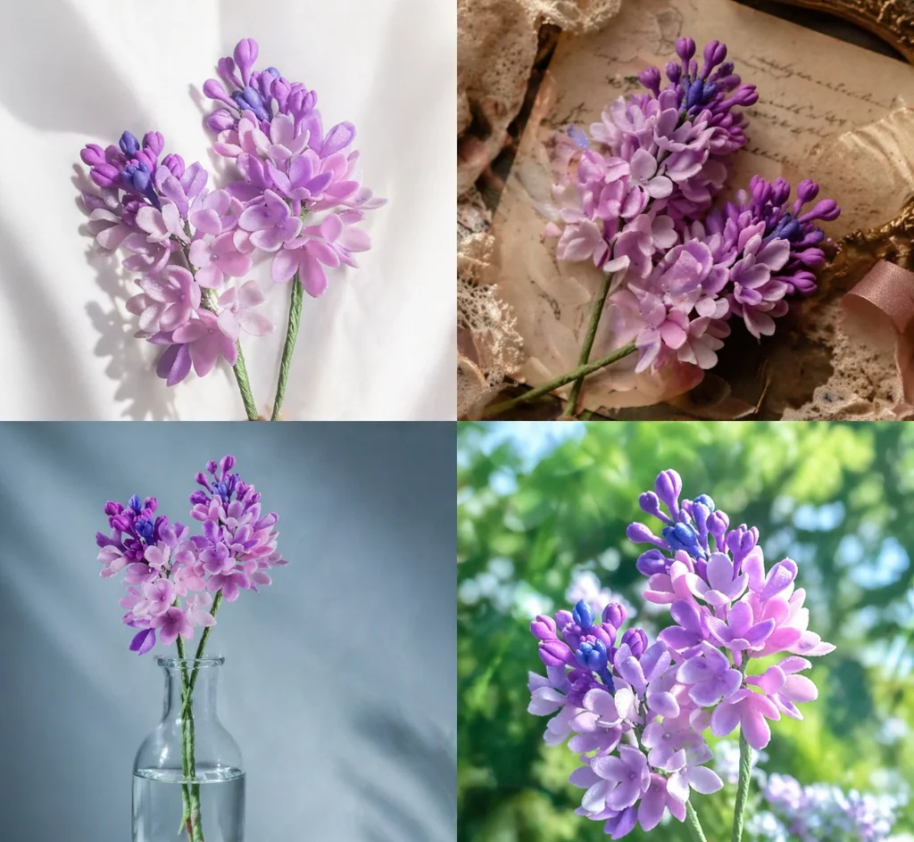
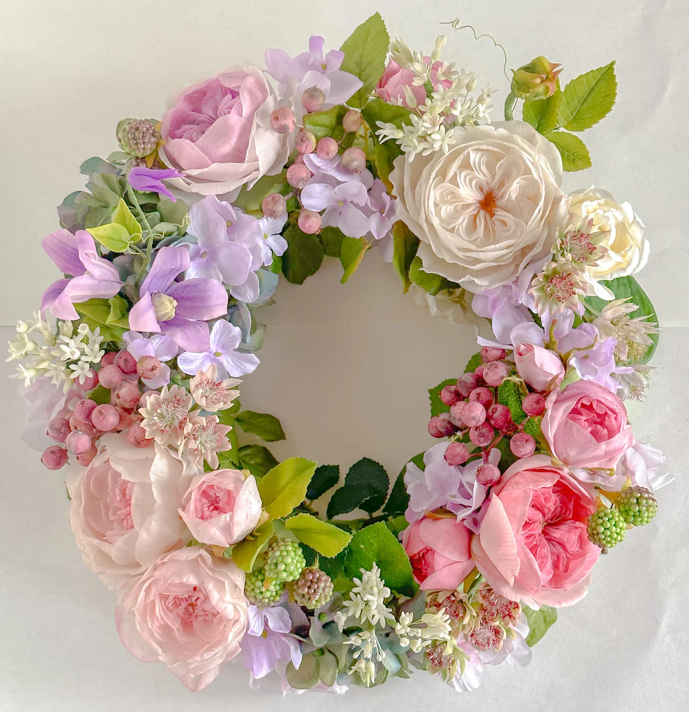
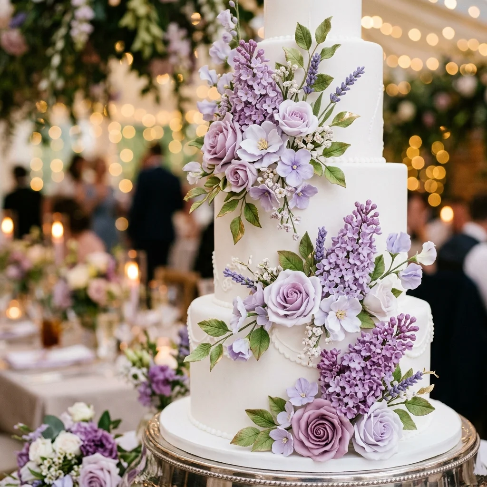
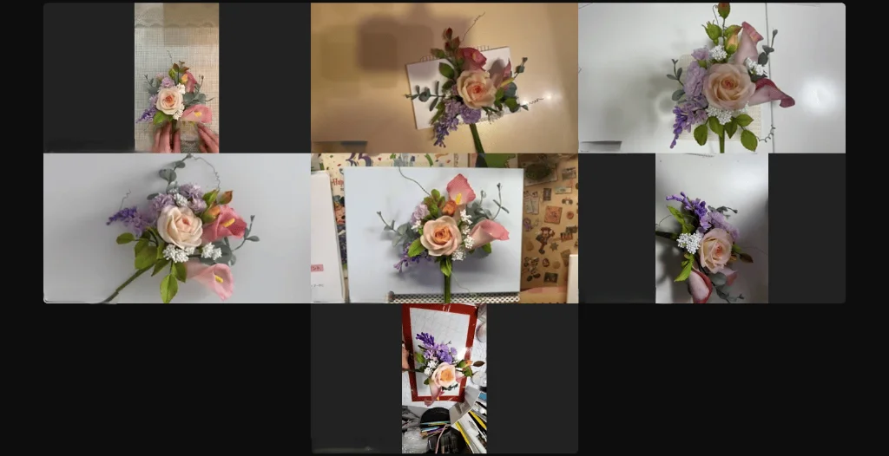

いつか始めたいと思っていた
美しい手仕事を、
今度こそ、自分の時間に
しませんか。
大人のためのシュガーフラワー入門講座
一輪のライラックから始める、
上品な花づくり。
スターターキット付き。
オンライン開催。
税込7,980円。
必要な材料や道具は、
ご自宅へお届けします。




こんなふうに
感じていませんか
お花や美しいものを
見ると、
心が少し動く。
上品な手仕事や
丁寧な暮らしに
憧れがある。
自分らしい趣味を
持ちたい。
人とは少し違う、
静かで美しい
時間を過ごしたい。
でも、家族のこと、仕事のこと、
日々の用事を優先しているうちに、
気づけば"いつか"のまま
時間が過ぎていた。
そんな方のために、
この入門講座を用意しました。
“いつか”は、始めないかぎり
変わりません
新しい趣味を持ちたい。
自分らしい表現をしたい。
美しいものを、
自分の手で作れる人になりたい。
そう思っていても、何もしなければ
日常はそのままです。
大きな挑戦をする必要はありません。
最初から本格的なブーケを
作る必要もありません。
まずは一輪。
自分の手で、上品なライラックを
仕上げる時間から
始めてみませんか。
この講座で作るもの
-
1花びらを作る繊細な花びらを一枚ずつ丁寧に仕上げます。
-
2房として整える花びらを集め、ライラックの房に仕立てます。
-
3葉を添えて完成葉を加え、存在感のある一輪に仕上げます。
自宅に
飾れる
贈り物に
添えられる
記念日の
一輪に
インテリアに
なる
手元に残るのは、
作品だけではありません
私にも、こんなに美しいものが
作れるんだ。
その実感があると、日常の見え方が少し変わります。
お店で花を見るとき、
ただ眺めるだけでなく
自分の目線で見られるようになる。
季節の色を感じるとき、
「あの花が咲いてる」と
気づく自分になれる。
家族の節目を迎えるとき、
自分の手で想いを
添えられるようになる。
この講座は、シュガーフラワーを学ぶ入口であり、
自分のための美しい時間を
取り戻す入口でもあります。

道具選びで迷わない
スターターキット付き
※詳細は画像をタップしてご覧ください
初めての方がつまずきやすいのは、
材料・道具の選び方です。
何の材料を
選べばいいか
どの道具が
必要なのか
どこで
買えばいいか
全部入りを
お届け
受講料7,980円に含まれています。
届いたらすぐ始められます。
初めてでも、
上品に仕上げるために
初めての方でも、美しい
繊細な仕上がりが叶う
2つの理由があります。
water_drop 焦らず作れる独自ペースト
一般的なペーストは乾燥が早く焦ってしまいがちですが、当講座では独自開発のオリジナルペーストを使用。
乾燥を防ぎながらゆっくりと丁寧に作業できるため、初めてでも完成度が格段に上がります。
straighten 独自の工夫を取り入れた専用道具
大工が使うノギスや細かな計測用スケール、メイク道具の筆など、初心者が直感的に扱いやすく、失敗しにくい道具を独自のカリキュラムとして工夫して取り入れています。
見よう見まねではなく、
「なぜこの形か」を理解しながら作ります。
-
1花びらの形を整えるなぜこの形なのかを理解しながら進めます。
-
2房として美しく束ねる見栄えのいい整え方を順番にお伝えします。
-
3上品な仕上がりへ葉を添えて、品のある一輪に仕上げます。
videocam オンラインだからこそ、手元がよく見える
5年以上前からオンラインレッスンを導入し、「どう見せれば分かりやすいか」を徹底的に研究してきました。
Zoomの手元カメラを通じて、通常の対面レッスンでは見えにくい指先の細かな動きや角度まで詳しく確認できるため、初めての方でも理解が格段に早まります。
少人数制で丁寧に進行するため、焦らずご自分のペースで進められます。
一輪のライラックから、
広がる世界があります

最初は、一輪のライラックから始まります。
その一輪が、やがてブーケの中の
ひとつの花になります。
大切な人への贈り物になります。
家族の記念日に添える、
あなただけの花になります。
VOICE
実際に、受講された方からは、
学びたかった」
きちんと技術として身についた」
整えられるようになった」
という声もいただいています。
まずは入門講座で、
一輪のライラックから
始めてみてください。
その先に進みたいと思ったときに、
次の世界が見えてきます。

受講生の様子・生の声
▼ 受講生ダイジェスト

実際にどのように作品が仕上がっていくのか、
手元の動きを確認しながら
少しずつ形にしていく流れをご覧ください。
▼ 受講生のご感想（動画）

実際に受講された皆様の
リアルな声やご感想をまとめました。
受講前の不安解消にぜひご覧ください。
今の段階で、
ブーケまで決める必要はありません。
まずは、シュガーフラワーの入口に
触れてみてください。
動画を見て「自分にもできそう」と
感じた方は、入門講座で一輪から
始めてみましょう。
DETAIL
大人のための
シュガーフラワー
入門講座
- 制作内容ライラック一房と、仕上がりを
美しく見せるための葉を制作します。 - 開催形式オンライン開催
- 受講時間約3時間
- 開催日程
5月22日（金）10:00〜13:00
5月23日（土）10:00〜13:00
※内容は両日とも同じです。
※ライラック制作／各回3時間です。 - 定員各回8名まで
- お申し込み締切 5月16日（土）まで
- 受講料
税込 7,980円
- 含まれるもの
・約5,500円相当のスターターキット
・オンラインレッスン
・事前案内
・質問サポート
・必要に応じたZoom操作サポート
スターターキットを事前にお届けするため、
5月16日（土）の締切後のお申し込みはお受けできない場合があります。
少人数で手元を見ながら進めるため、各回8名の定員があります。
オンラインでも
安心して受講できます
「Zoomを使ったことがない」「設定が不安」
という方も、どうぞご安心ください。
皆様がスムーズに参加できるようサポートします。
事前の接続サポート
必要に応じて、レッスン前に接続確認や簡単なZoom操作のレクチャーを行っています。
スマホだけでも受講可能
スマホ1台でも参加できます。パソコンと両方あると、画面を見ながら手元も確認しやすくなります。
ご不安な方は、お申し込み前に
LINEでお気軽にご相談ください。
一輪で終わっても
大丈夫です
この入門講座だけで終わっても、
もちろん大丈夫です。
まずは一輪のライラックを、
自分の手で仕上げること。
それだけでも、
十分に価値のある時間です。
そして、もし「もっと作ってみたい」と
感じられた方には、その先に
ブーケづくりまで学べる本講座があります。
無理に進む必要はありません。
ご自身のペースで、
手仕事の世界を広げていただけます。
この講座が向いている方
- check_circle きれいなものや上品な手仕事が好きな方
- check_circle 自分だけの趣味を持ちたい方
- check_circle 人とは少し違う、丁寧な時間を過ごしたい方
- check_circle 家族の節目や記念日に自分の手で何かを添えたい方
- check_circle 安っぽく見える手作りは避けたい方
- check_circle 初めてでも、きちんとした先生から学びたい方
- check_circle 道具選びで迷わず、まずは一歩始めてみたい方
逆に、向いていない方
- close とにかく安く、無料で体験したい方
- close 短時間で簡単に完成するものだけを求めている方
- close 動画を見るだけで、手を動かすつもりのない方
- close 上品な仕上がりより手軽さだけを優先したい方
この講座は無料体験ではありません。
きちんと材料と道具を揃え、先生と一緒に一輪を仕上げるための有料入門講座です。
今回の開催から
始めてみませんか
「いつか始めたい」と思っていたことは、
始めないかぎり、
ずっと"いつか"のままです。
この入門講座は、
大きな決断をするためのものでは
ありません。
自分のための美しい時間を、
日常の中に取り戻すための
小さな入口です。
- 家族のことを優先してきた方も。
- 自分の趣味を後回しにしてきた方も。
- 人とは少し違う、上品な手仕事を
始めてみたい方も。
この開催から、
一輪のライラックを
作ってみませんか。
講師紹介

この講座を担当するのは、
エコールシュクレ主宰の
平川かなえ先生
シュガーフラワー、シュガーアート、フラワー表現を専門に、
上品で繊細な作品づくりをお伝えしています。
初めての方にも、手元の動きや仕上がりの見え方を
丁寧にお伝えしながら進めます。
作品づくりだけでなく、日常の中に
美しい手仕事の時間を持つことを
大切にしています。
- 日本シュガーアートドール協会
シュガーフラワー専任講師 - 目白大学短期大学製菓学科
シュガークラフト講師 - つくば栄養医療調理製菓専門学校
シュガークラフト講師 - 英国での学び・国内外コンペティション
にて高い評価 - 2024年 ジャパンケーキショー
シュガークラフト部門
グランプリ・連合会会長賞 受賞
高い技術を持つだけではなく、
初めての方が迷わず進めるように、
順番と流れを整えて指導してくださる先生です。


▼ 入門講座「ライラック」
のご紹介（動画）
よくある質問
はい。初めての方にもご受講いただける入門講座です。必要な材料や道具はスターターキットとしてお届けします。レッスンでは、手順を追いながら一輪のライラックを仕上げていきます。
はい。少人数で進めるため、手元の様子を確認しながら進行します。初めての方でも取り組みやすいように順番にお伝えします。
はい。事前に接続方法や使い方をご案内しています。必要に応じてレッスン前に接続確認や操作レクチャーも行っています。
スマホだけでもご受講いただけます。できればパソコンとスマホの両方があると、画面を見ながら手元も確認しやすくなります。
はい。もちろん大丈夫です。まずは一輪を仕上げる時間を楽しんでいただくための講座です。
無理なご案内は行いません。入門講座だけで完結していただいても問題ありません。
お申し込み後、受講日やキット発送の情報をご案内します。スターターキットを事前にお届けし、当日はオンラインで制作を進めます。
スターターキット発送前であれば、日程変更などのご相談が可能です。キット発送後のキャンセルは個別にご相談ください。
いつか始めたいと思っていた
美しい手仕事を、
今度こそ、自分の時間にしませんか。
まずは一輪のライラックから。
自分の手で、上品な花を仕上げる
時間を始めてみてください。
大人のためのシュガーフラワー
入門講座
スターターキット付き。
オンライン開催。
税込7,980円。